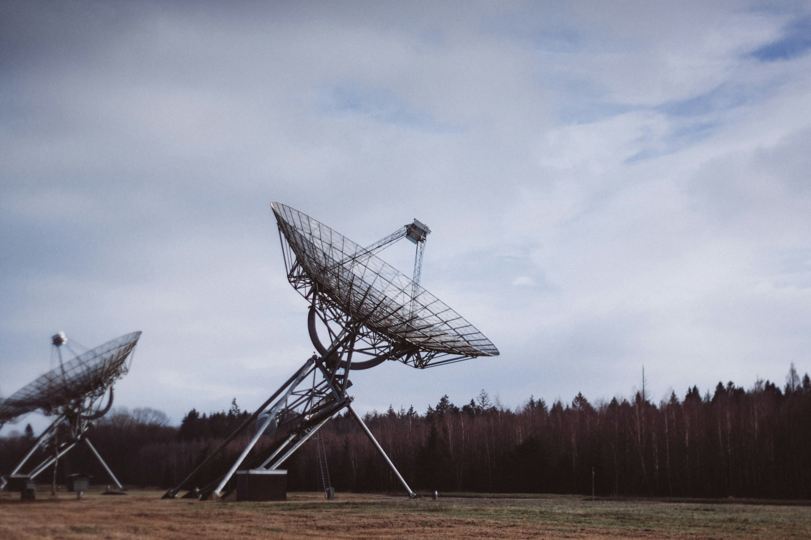
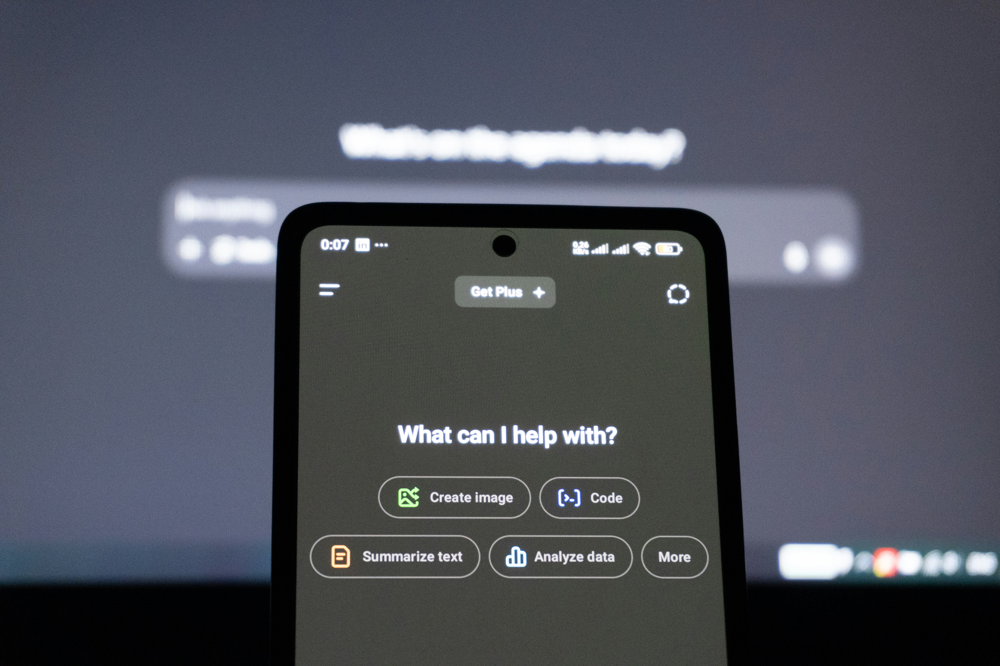
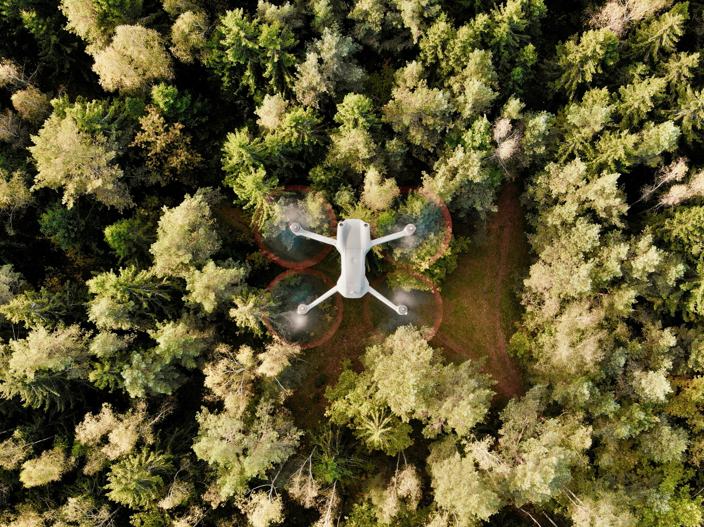

Empowering sustainability through cutting-edge technology

Pemantauan deforestasi real-time dengan teknologi satelit resolusi tinggi untuk melacak perubahan hutan secara akurat

Kecerdasan buatan untuk analisis prediktif dan optimasi sumber daya alam dengan akurasi tinggi, menganalisis big data dari berbagai sumber

Teknologi drone kami merevolusi proses reboisasi dengan sistem penanaman presisi yang menanam hingga 10.000 pohon per hari dengan akurasi tinggi
Hasil nyata implementasi teknologi EcoNesia dalam melestarikan alam Indonesia
"Teknologi EcoNesia menyelamatkan hutan kami dengan sistem deteksi dini yang akurat."
Perbandingan efektivitas antara metode konvensional dan solusi teknologi EcoNesia
Manual dan konvensional
Deteksi perubahan membutuhkan waktu lama
Terbatas oleh kemampuan manusia dan cuaca
Hanya area yang mudah diakses
SDM, transportasi, dan waktu yang besar
Digital & Otomatis
Deteksi instan dengan notifikasi
AI-powered analytics dengan presisi tinggi
Satellit + drone mencakup seluruh wilayah
Otomatisasi mengurangi biaya SDM